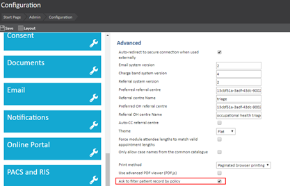
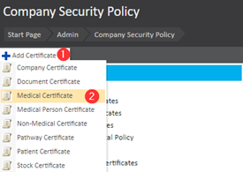
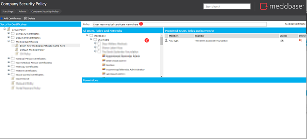
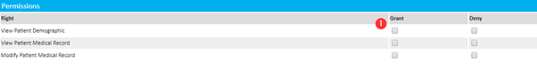
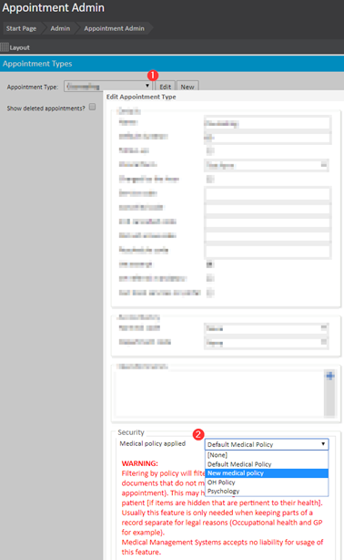
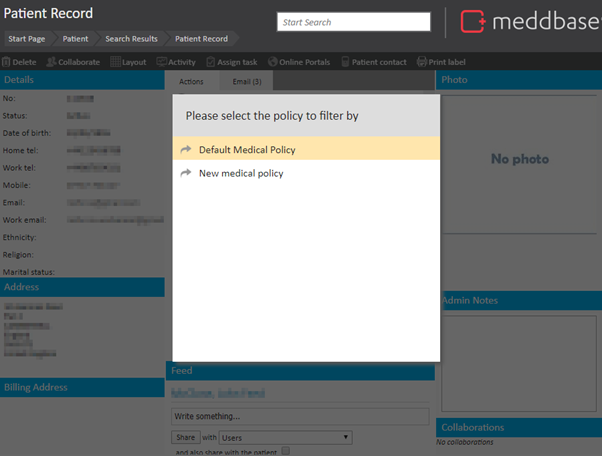
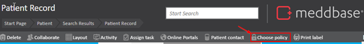

Meddbase provides the ability to split patient medical records.
This feature should only be used in instances where a client is legally required to split an Occupational Health record from a patient’s main medical record or history. It is not intended for general use and should not be applied in routine clinical scenarios. Using policy-based filtering during an appointment may result in critical medical information being hidden, which could negatively impact patient care. For this reason, Medical Management Systems strongly advises against using this feature except for the specific legal requirement outlined above. Use of this functionality is entirely at the user’s discretion, and Medical Management Systems accepts no liability for its application.
You can set which Medical Policy applies to individual Appointment Type, then set permissions on that Medical Policy for who should have access to view or modify records captured under this Medical Policy.
More information on the Medical Policy can be found here: Security Policy - Medical Certificates.
WARNING
Enabling split medical records is a complex feature and it is expected you have an understanding of security policy and the use of this feature. You should seek advice from your Account Manager before proceeding with this.
This article will guide you through how you can create a new medical policy, and apply it to appointments.
This article is split into three sections which need to be completed in sequential order:
Before the system will begin filtering different medical policies you first need to enable this in the configuration. You will find this setting under Admin > Configuration > Advanced.

For filtering to work, there must be at least two Medical Policies. It is likely you will only have one Default Medical Certificate in your chamber. You can manage and create new Medical Certificates under Admin > Security policy.

Once you have created the new certificate, you must give it a policy name in the policy text box, as shown in the image below.

Finally, you must select the Users, Roles or Networks that should be permitted to have access to this Medical Policy.
It’s important that View Patient Demographic and View Patient Medical Record are granted here, so the User has access to view records saved under this Medical Policy.

You can now apply this Medical Certificate to any applicable Appointment Types.
You can do this by navigating to Admin > Appointment admin > [Select Appointment Type] > Edit.

Any past Appointments booked using this Appointment Type before you applied a Medical Policy to it, will not inherit the Medical Policy you apply at this stage. The Medical Policy will only apply for appointments booked after you have added this Medical Policy to the Appointment Type.

If a clinician has permission to view more than one Medical Policy and they attempt to view a patient record that contains records stored against multiple Medical Policies, they will be prompted to select which Medical Policy they would like to use while viewing the patient as pictured below.
You can switch which Medical Policy you wish to filter on at any time by clicking on the Choose policy button when inside a Patient Record.

If a clinician only has permission for one Medical Policy, they will see no such option and instead will by default only see the records for the Medical Policy they have permission for.